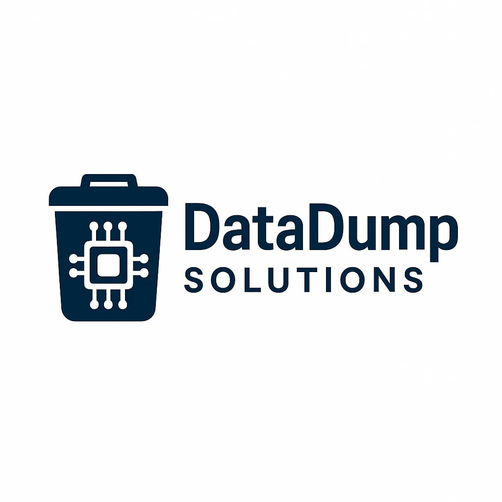

DataDumpSolutions
Responsible IT Waste & Data Disposal Services
We Dump Data, Not Your Security.
About Us
We are a Houston-based IT asset disposal and e-waste recycling company committed to secure, eco-friendly practices for handling outdated electronics and sensitive data.
Our Services
- E-Waste Collection & Recycling: Responsible collection and recycling of outdated or unused electronics in compliance with environmental regulations.
- Data Destruction & Device Sanitization: Secure data wiping and physical destruction to ensure complete information security before disposal.
- IT Asset Disposition (ITAD): End-to-end lifecycle management of retired IT assets, including inventory tracking and certified disposal.
- Refurbishment & Resale of Devices: Reconditioning usable hardware for resale, donation, or internal reuse — reducing landfill waste.
- Compliance Reporting & Certifications: Full documentation and reporting for HIPAA, R2, ISO, and other compliance needs.